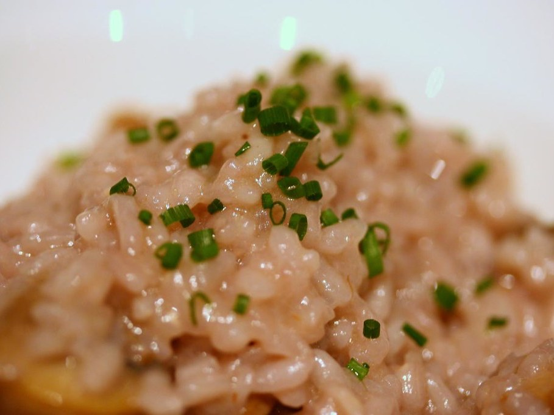

Pasta & Risotto
Pilz-Risotto mit Barolo
Aromatisches Risotto aus dem Piemont mit Steinpilzen, Tomaten und frischen Kräutern, abgelöscht mit Barolo. Gelingt mit getrockneten wie mit frischen Pilzen.
Universalmesser3D-RührerSpatelSchüsselWasserkocherSieb
Foto: „Risotto di Barolo con Fungi“ von LexnGer, CC BY-NC 2.0 (Lizenz)
Zutaten
- 40 gParmesan, in Stücken
- 1 Stängelglatte Petersilie, nur die Blätter
- 80 gZwiebel, halbiert
- 1Knoblauchzehe
- 1 ZweigRosmarin, nur die Nadeln
- 1 StängelSalbei, nur die Blätter
- 1 StängelBasilikum, nur die Blätter
- 40 gButter
- 20 mlOlivenöl
- 100 ggetrocknete Steinpilze, 20 Min. in heißem Wasser eingeweicht und gut ausgedrückt – oder 500 g frische Pilze in Scheiben
- 400 gTomaten, geschält und gewürfelt (oder 1 Dose stückige Tomaten)
- Salz
- Pfeffer
- 350 gRisottoreis
- 200 mlBarolo, oder ein anderer kräftiger, trockener Rotwein
- 600 mlGemüsebrühe, heiß
Zubereitung
- Universalmesser einsetzen. Parmesan und Petersilie in den Topf geben und fein zerkleinern.UniversalmesserStufe 1810 Sek.mit Messbecher
- Parmesan-Mischung in eine Schüssel umfüllen. Zwiebel, Knoblauch, Rosmarin, Salbei und Basilikum in den Topf geben und zerkleinern.UniversalmesserStufe 145 Sek.mit Messbecher
- Mit dem Spatel nach unten schieben. Universalmesser entnehmen und 3D-Rührer einsetzen.
- Butter und Olivenöl zugeben und sanft andünsten.3D-RührerStufe 1110 °C5 Min.ohne Messbecher
- Steinpilze (oder frische Pilze) zugeben und mitdünsten.3D-RührerStufe 2120 °C5 Min.ohne MessbecherFrische Pilze 5 Min. länger dünsten (am Gerät + 5 Min.), bis ihre Flüssigkeit weitgehend verdampft ist.
- Tomaten zugeben, mit Salz und Pfeffer würzen und köcheln lassen.3D-RührerStufe 198 °C20 Min.mit Messbecher
- Risottoreis zugeben und kurz mitdünsten.3D-RührerStufe 2120 °C2 Min.ohne Messbecher
- Mit Barolo ablöschen und einkochen lassen.3D-RührerStufe 2120 °C3 Min.ohne Messbecher
- Heiße Gemüsebrühe zugeben und garen, bis der Reis bissfest und cremig ist.3D-RührerStufe 298 °C18 Min.ohne MessbecherMit frischen Pilzen nur 500 ml Gemüsebrühe nehmen.
- 3D-Rührer mit dem Spatel entnehmen. Risotto 2 Min. ruhen lassen, abschmecken und mit der Parmesan-Mischung bestreut servieren.
Tipps
- Das Einweichwasser der Steinpilze durch einen Kaffeefilter gießen und einen Teil der Brühe damit ersetzen – für ein intensiveres Pilzaroma.
- Mit frischen Pilzen: 500 g gemischte Pilze (z. B. Champignons, Kräuterseitlinge, Steinpilze) in Scheiben schneiden. 10 g eingeweichte getrocknete Steinpilze dazu verleihen den typischen Waldpilzgeschmack.
- Statt Barolo eignet sich jeder kräftige, trockene Rotwein, etwa ein Nebbiolo oder Langhe Rosso.
- Ist das Risotto zu flüssig, 2–3 Min. weitergaren; ist es zu fest, einen Schuss heiße Brühe unterrühren.
In die Home Connect App übertragen
App → Rezepte → Mein Rezept → Erstellen. Jedes Feld mit „Kopieren“ übernehmen; Werkzeug, Temperatur, Stufe und Dauer im Schritt einstellen. Oder diese Seite als Link in den KI-Rezeptumwandler geben.
RezeptnamePilz-Risotto mit Barolo
BeschreibungAromatisches Risotto aus dem Piemont mit Steinpilzen, Tomaten und frischen Kräutern, abgelöscht mit Barolo. Gelingt mit getrockneten wie mit frischen Pilzen.
Portionen4
SchwierigkeitEinfach
Vorbereitungszeit (Min.)25
UtensilienUniversalmesser, 3D-Rührer, Spatel, Schüssel, Wasserkocher, Sieb
Zutaten
40 gParmesan, in Stücken
1 Stängelglatte Petersilie, nur die Blätter
80 gZwiebel, halbiert
1Knoblauchzehe
1 ZweigRosmarin, nur die Nadeln
1 StängelSalbei, nur die Blätter
1 StängelBasilikum, nur die Blätter
40 gButter
20 mlOlivenöl
100 ggetrocknete Steinpilze, 20 Min. in heißem Wasser eingeweicht und gut ausgedrückt – oder 500 g frische Pilze in Scheiben
400 gTomaten, geschält und gewürfelt (oder 1 Dose stückige Tomaten)
ohne MengeSalz
ohne MengePfeffer
350 gRisottoreis
200 mlBarolo, oder ein anderer kräftiger, trockener Rotwein
600 mlGemüsebrühe, heiß
Schritte
Schritt 1Universalmesser einsetzen. Parmesan und Petersilie in den Topf geben und fein zerkleinern.
UniversalmesserStufe 1810 Sek.mit Messbecher
Im Schritt einstellen · Timer 00:00:10
Schritt 2Parmesan-Mischung in eine Schüssel umfüllen. Zwiebel, Knoblauch, Rosmarin, Salbei und Basilikum in den Topf geben und zerkleinern.
UniversalmesserStufe 145 Sek.mit Messbecher
Im Schritt einstellen · Timer 00:00:05
Schritt 3Mit dem Spatel nach unten schieben. Universalmesser entnehmen und 3D-Rührer einsetzen.
Schritt 4Butter und Olivenöl zugeben und sanft andünsten.
3D-RührerStufe 1110 °C5 Min.ohne Messbecher
Im Schritt einstellen · Timer 00:05:00
Schritt 5Steinpilze (oder frische Pilze) zugeben und mitdünsten.
3D-RührerStufe 2120 °C5 Min.ohne Messbecher
Im Schritt einstellen · Timer 00:05:00
Schritt 6Tomaten zugeben, mit Salz und Pfeffer würzen und köcheln lassen.
3D-RührerStufe 198 °C20 Min.mit Messbecher
Im Schritt einstellen · Timer 00:20:00
Schritt 7Risottoreis zugeben und kurz mitdünsten.
3D-RührerStufe 2120 °C2 Min.ohne Messbecher
Im Schritt einstellen · Timer 00:02:00
Schritt 8Mit Barolo ablöschen und einkochen lassen.
3D-RührerStufe 2120 °C3 Min.ohne Messbecher
Im Schritt einstellen · Timer 00:03:00
Schritt 9Heiße Gemüsebrühe zugeben und garen, bis der Reis bissfest und cremig ist.
3D-RührerStufe 298 °C18 Min.ohne Messbecher
Im Schritt einstellen · Timer 00:18:00
Schritt 103D-Rührer mit dem Spatel entnehmen. Risotto 2 Min. ruhen lassen, abschmecken und mit der Parmesan-Mischung bestreut servieren.
Tipps
TippsDas Einweichwasser der Steinpilze durch einen Kaffeefilter gießen und einen Teil der Brühe damit ersetzen – für ein intensiveres Pilzaroma.
Mit frischen Pilzen: 500 g gemischte Pilze (z. B. Champignons, Kräuterseitlinge, Steinpilze) in Scheiben schneiden. 10 g eingeweichte getrocknete Steinpilze dazu verleihen den typischen Waldpilzgeschmack.
Statt Barolo eignet sich jeder kräftige, trockene Rotwein, etwa ein Nebbiolo oder Langhe Rosso.
Ist das Risotto zu flüssig, 2–3 Min. weitergaren; ist es zu fest, einen Schuss heiße Brühe unterrühren.
Nach: Der Silberlöffel, S. 393 („Pilz-Risotto mit Barolo“). Für den Bosch Cookit umgeschrieben.